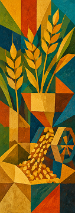
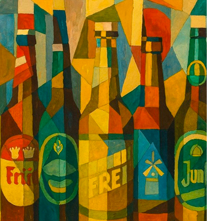
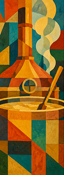
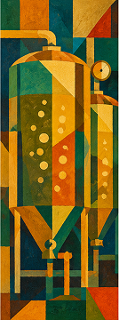
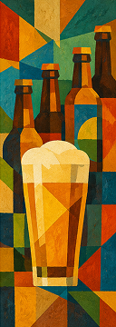
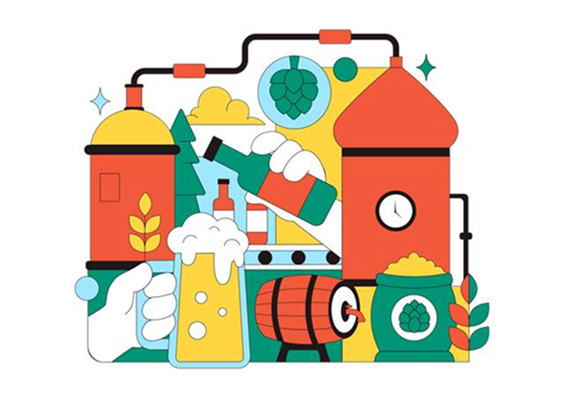

1. Malt
Malt er korn, der giver øllet smag og farve.
En enkel guide til smag, historie og alt det, du altid har undret dig over om øl.
GÅ PÅ OPDAGELSE →

Malt er korn, der giver øllet smag og farve.

Malt blandes med varmt vand, så stivelse omdannes til sukker.

Urten koges, og humle tilfører bitterhed og aroma.

Gær omdanner sukker til alkohol og kuldioxid.
Find en øltype, der matcher din smag og nysgerrighed.

Let og frisk

Humlet og aromatisk

mørk og fyldig

Udforsk mikrobryggeriernes verden og deres kreative tilgang til øl.
LÆS MERE →